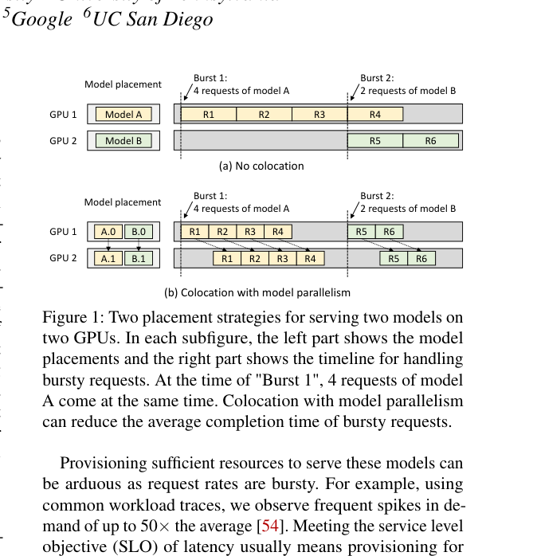
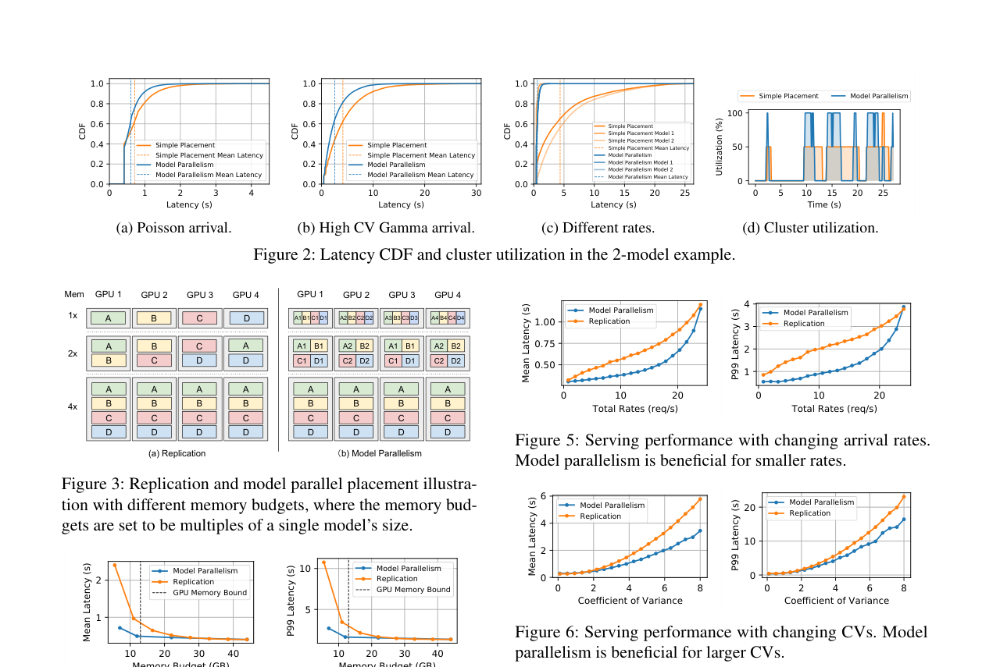

AlpaServe：基于模型并行性的统计复用深度学习服务：中文精读与校订
这篇论文做什么？
把模型并行从“模型放不下时的被迫选择”变成多模型 serving 的统计复用工具：用跨设备模型副本吸收不同模型的突发峰值，并联合优化放置与并行策略。
- 问题：每模型独占副本会在突发、低相关到达流下产生严重容量闲置。
- 方法：在复制开销与跨设备统计复用收益之间搜索 model placement。
- 结果：在 >99% 请求满足延迟约束时，承载率最高提高 10×或可容忍 6× 更强突发。
校订说明：本页按原论文的论证顺序重写术语与因果关系；图均裁自论文原图，数据结论保留论文适用条件，不把峰值结果泛化为固定加速。
摘要。模型并行性传统上被视为将单个大型深度学习模型扩展到超出单设备内存限制的方法。论文证明，模型并行性还可用于在服务多个模型时实现多设备的统计复用（statistical multiplexing），即使单个模型可以放入单个设备。研究揭示了模型并行性引入的开销与突发工作负载下利用统计复用降低服务延迟的机会之间的基本权衡。论文探索了这一新的权衡空间，提出 AlpaServe 系统，自动确定跨分布式集群放置和并行化大型深度学习模型集合的高效策略。在生产工作负载上评估显示，AlpaServe 可以在满足 99% 以上请求延迟约束的前提下，处理高达 10 倍更高的请求速率或 6 倍更大的突发性。
1 引言
服务大型模型面临双重挑战：模型参数量指数增长（如 GPT-3 需 325GB 内存），且请求到达具有高度突发性——生产 trace 显示峰值可达平均值的 50 倍。满足延迟 SLO 通常意味着为峰值负载配置资源，而额外设备大部分时间闲置。更复杂的是，实践中常需同时服务多个模型和同一模型的多个变体（如 A/B 测试或领域微调模型）。
1.1 核心观察
考虑两个模型和两个 GPU 的场景，每个 GPU 内存足以容纳一个完整模型。传统做法是为每个模型分配一个专用 GPU（图 1a）。这看似合理——模型分区跨 GPU 会引入通信开销增加延迟。但论文发现，引入额外模型并行性（即使单样本执行时间增加）可以启用更广泛的放置策略（如模型共置），在突发工作负载下改善统计复用。
具体地，假设单模型执行时间为 y。不共置时，4 个突发请求的平均延迟为 (1y+2y+3y+4y)/4 = 2.5y。使用模型并行共置后（假设 10% 开销），平均延迟降至 (1.1y+1.6y+2.1y+2.6y)/4 = 1.85y。共置加模型并行可以利用更多设备处理突发请求，尽管有额外开销，仍降低了平均完成时间。
2 模型并行性在服务中的权衡
2.1 Intra-Operator 并行
将单个算子（如矩阵乘法）分区到多个设备上并行执行。好处是减少单请求端到端延迟，扩展可用内存。代价是参与 GPU 间的通信开销（如 all-reduce）。对于 TTFT 敏感的 prefill 阶段，intra-operator 并行通过减少执行时间来降低延迟。
2.2 Inter-Operator 并行
将模型的不同算子分配到不同设备上以流水线方式执行。不减少单请求执行时间（通常因阶段间通信而增加），主要用于突破单 GPU 内存限制。但在服务场景中，pipeline parallelism 可以线性扩展系统的速率容量——每个新增 GPU 线性增加可服务的请求速率。
2.3 统计复用效应
关键洞察是：模型并行性减少每设备内存使用，从而可以在一台设备上放入更多模型，在处理突发请求时实现更好的统计复用。当多个模型的请求突发到达时，共置的模型可以利用所有可用 GPU 并行处理，而专用分配方案下每个模型只能使用自己的 GPU。这种统计复用在突发性越高时收益越大。
3 权衡空间分析
论文通过排队理论分析了模型并行性的开销与统计复用收益之间的权衡。关键发现：模型并行性的有效性取决于多个因素——每 GPU 内存容量（决定可共置的模型数量）、请求到达模式（突发性越高收益越大）、SLO 严格程度（越严格越能从降低延迟中受益）。当工作负载突发性低时，模型并行开销可能超过统计复用收益；当突发性高时，统计复用收益显著超过开销。
4 AlpaServe 系统设计
4.1 模型放置算法
AlpaServe 接收集群资源规格、模型集合和周期性工作负载 profile，输出模型分区和放置策略以优化 SLO 达标率。核心是一个迭代模拟器引导的模型放置算法：在每轮迭代中，模拟器评估当前放置策略下的服务性能，指导算法调整模型共置和并行度配置。
4.2 分组分区算法
集群被划分为不相交的模型并行组。每组内的 GPU 共同服务共置的模型集合。分组分区算法搜索最优的组划分方式，平衡组内模型并行开销与跨组的统计复用收益。
4.3 自动并行化
AlpaServe 扩展了训练自动并行化算法以适应推理场景。训练场景优化吞吐量，而推理场景需要同时考虑延迟和速率容量，对并行策略的选择有不同偏好。
5 实验评估
在 64-GPU 集群上使用生产工作负载评估。结果显示，当逐个优化指标时，AlpaServe 可以将请求处理速率提高 10 倍、将延迟截止时间收紧 2.5 倍、或容忍 6 倍更突发的工作负载，同时保持 99% 以上请求在 SLO 内。这些收益在突发性高的工作负载下尤为显著，因为统计复用的价值随突发性增长。
6 局限与选题启发
AlpaServe 的放置策略是静态的，基于周期性工作负载 profile 确定，不随实时负载动态调整。在模型数量众多且工作负载变化频繁的场景下，静态放置可能次优。此外，AlpaServe 主要关注传统 DL 模型服务，未深入 LLM 特有的 prefill-decoding 两阶段特征和 KV cache 管理问题。
对本仓库方向的意义。AlpaServe 揭示了模型并行性在服务场景中的统计复用价值——这不仅是扩展大模型的手段，更是处理突发工作负载的资源优化策略。在多 LLM agent 工作流中，不同 agent 可能使用不同模型，请求到达高度突发。AlpaServe 的共置与统计复用思想可以指导工作流调度器在异构 GPU 上做模型放置决策，这正是 Chimera（异构多智能体服务）和 Coral（异构云 GPU 多 LLM 服务）的理论基础。
公式与目标函数
目标不是让单次推理最快，而是选择放置方案 P，使突发流量下超过 SLO 的概率尽可能低。适量模型并行会增加单请求开销，却扩大可共享设备池。
原论文图解


证据边界与校订结论
AlpaServe 的结论针对多模型在线推理，不是 LLM token-level P/D serving。关键前提是不同模型的突发并非完全同步，因而共享池能平滑峰值；如果流量高度相关或模型并行通信过重，统计复用优势会下降。
参考说明
参考文献保留在原 PDF 中。本文译稿覆盖摘要、模型并行性权衡分析、统计复用效应、AlpaServe 系统设计和实验结果。